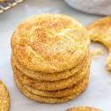

Mrs. Siggs Snickerdoodle Recipe

This recipe tells you step by step, exactly how to create the perfect
snickerdoodle cookies that your family will love.
For this recipe you will need:
- 1 1/2 cups white sugar
- 1/2 cup butter
- 1/2 cup shortening
- 1/2 large eggs
- 2 teaspoons vanilla extract
- 2 3/4 cups all-purpose flour
- 2 teaspoons cream of tartar
- 1 teaspoon baking soda
- 1/4 teaspoon salt
- Cinnamon-Sugar(2 tablespoons white sugar and 2 teaspoons ground cinnamon
Directions:
- Preheat oven to 400 degrees F.
- Mix sugar, butter, shortening, eggs, and vanilla in a large bowl
until creamy.
- Whisk flour, cream of tartar, baking soda
and salt together in a seperate bowl.
- Slowly mix the dry ingredients into the wet ingredients until combined.
- Shape the dough into walnut sized balls.
- Make the cinnamon-sugar by combined cinnamon and sugar in a bag and shaking.
- Place the balls of dough into the cinnamon-sugar, and roll until coated.
- Place the balls two inches apart on a baking sheet.
- Bake the cookies in the preheated oven until set, switching the racks halfway through, which should be around 8-10 minutes.
- Remove the cookies from the oven and place them on a wire rack until cooled.